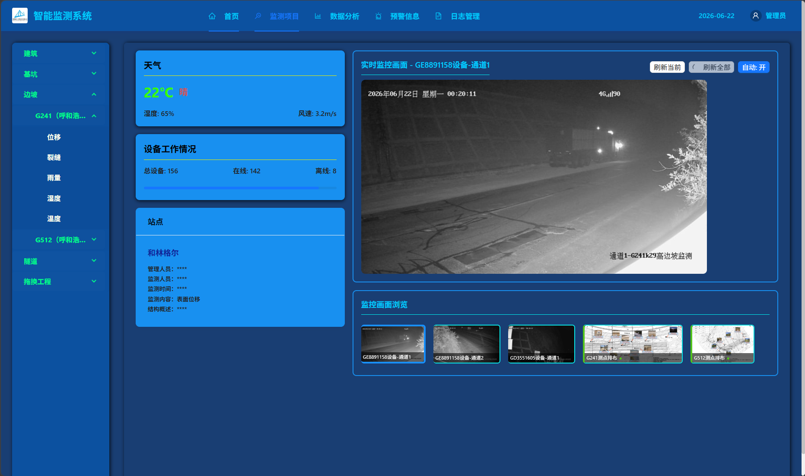
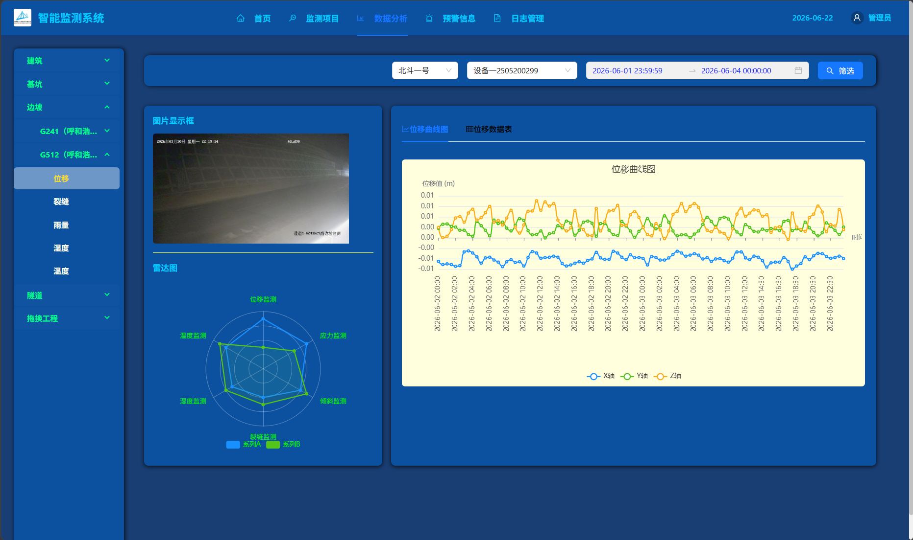

项目作品展示
项目一
面向复杂周界防护的云-边-端协同智能警戒系统
利用高清摄像头、树莓派与远程服务器实现户外复杂场景的入侵报警。主要负责监控区域的视频采集及入侵报警算法。系统采用多进程架构，主进程负责图像采集（通过海康威视SDK驱动）及报警信息传输（通过FTP传输到服务器），检测进程负责变化检测与目标识别，两者通过文件异步通信。检测时，利用 OpenCV 的 MOG2 算法提取变化前景，并对各级 ROI 设定差异化阈值以筛选变化区域，再调用微调的 YOLO 模型识别目标。


项目二
基于Web网页的站点监测系统
用于网页访问监测站点的相关数据，涉及边坡、基坑、隧道等监测场景，包含位移、裂缝、温度、湿度等多参数监测功能。项目技术栈涉及前后端及数据库，负责后端开发，基于 Python 的 Flask 框架，通过和数据库交互实现了包括用户认证、监测数据传递、访问令牌机制和文件上传等功能。


项目三
基于ESP32-C3的WiFi智能桌面伴侣（Clawd Mochi）
基于 ESP32-C3 与 ST7789 彩屏（SPI 接口）设计的桌面互动设备。通过 WiFi AP/STA 双模联网，内置 HTTP Server 提供移动端 Web 控制界面，支持表情动画、实时绘图等功能。针对 Flash 存储限制，设计稀疏像素编码将动画数据压缩 87%；采用帧缓冲 + SPI 突发传输消除屏幕闪烁。集成 mDNS 局域网发现与 NVS 凭据持久化。